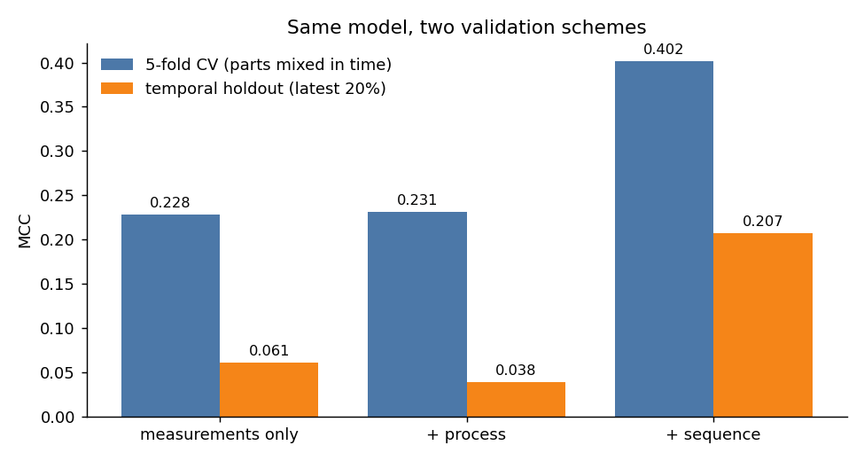
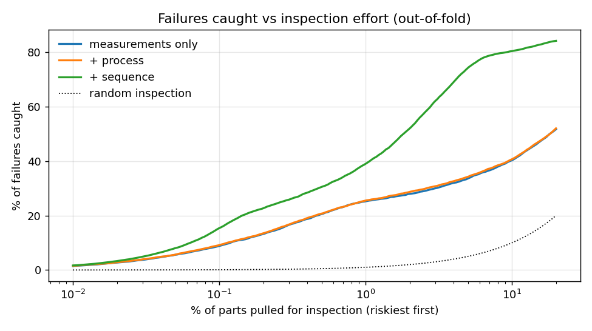

1.18 million real parts from a Bosch assembly line, 52 stations, 0.58% failing final inspection. The useful question is not a leaderboard metric but an inspection budget: pull the riskiest few percent of parts, and how many failures do you stop?
Parts produced next to a failed part fail at 6.4%, eleven times the base rate. The strongest features describe where a part sits in its lot: whether the next part has a consecutive Id and the same start time. They use timestamps and Ids only, never a neighbour's label, so nothing leaks.
| Features | CV MCC | Later parts MCC |
|---|---|---|
| 968 measurements | 0.228 | 0.061 |
| + process (route, stations, time per line) | 0.231 | 0.038 |
| + sequence (position in the production flow) | 0.402 | 0.207 |

The Kaggle test set interleaves with training parts in time, so the leaderboard (0.418) tracks CV. A model running on the line would see the temporal number, and that is the one the inspection policy below is built on.

With inspection costing 1 and an escaped failure costing 100, the cost-minimising policy inspects 6.6% of production and brings the cost of quality to 40% of inspecting nothing.